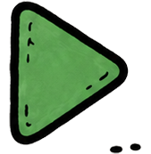
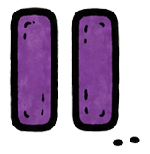

expand_circle_down
Nenhum arquivo carregado.
help
visibility
delete
Limpar cenas
Tela preta
expand_circle_down
Preparar vídeo
Mostrar agora
Selecione ou prepare um vídeo para carregar o player.


Stop
Mudo
Som
-10s
+10s
Volume sincronizado
70%
Nenhum vídeo preparado.
Remover vídeo
Limpar vídeos
⇤
Recolher
▦
Grid
➤
Pointer
─
Linha
○
Círculo
□
Quad.
◢
Cone
⌫
Med.
✕
Tool